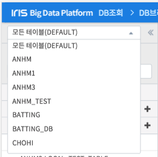
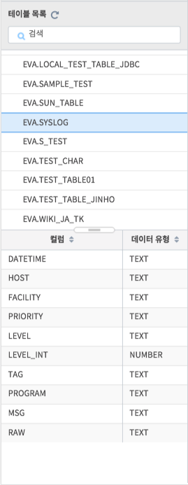
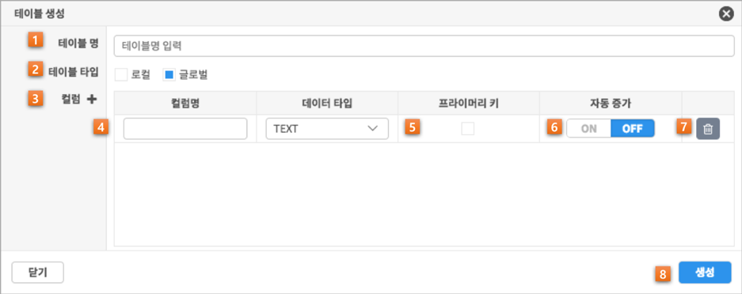
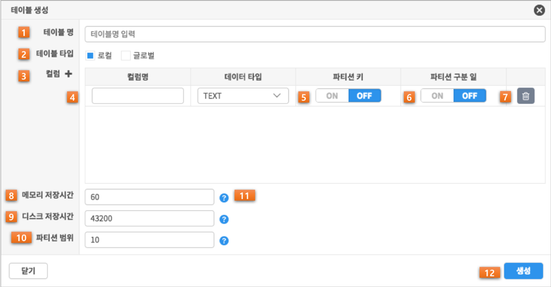
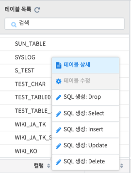
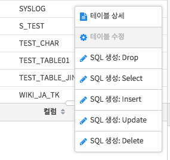

테이블 탐색¶
데이터베이스 선택¶
IRIS-DB에서는 데이터베이스 기능을 제공합니다. 화면 좌상단의 Combo box를 클릭하면 아래와 같이 선택할 수 있는 데이터베이스 목록이 나타납니다. 데이터베이스를 선택하면 데이터베이스에 속한 테이블만 목록에 출력되며, SQL을 수행할 때 해당 데이터베이스를 기준으로 실행 합니다.
테이블 목록¶
테이블 목록 창에서는 IRIS에 만들어진 테이블 목록을 확인할 수 있으며, 테이블 이름 검색, 생성, 수정, 삭제, 상세 정보를 확인할 수 있습니다. IRIS 테이블의 종류는 총 3가지 이며 이중 시스템 테이블은 관리자로 로그인 했을 때만 보여집니다.
특정 테이블을 선택하면 아래와 같이 해당 테이블의 컬럼 정보를 간략하게 확인할 수 있습니다
테이블 생성¶
사용자는 글로벌 테이블과 로컬 테이블을 생성할 수 있습니다.
글로벌 테이블¶
IRIS에서 글로벌 테이블은 작고 변동이 적은 데이터를 저장하는 용도로 사용하는 테이블입니다.
| 번호 | 구분 | 설명 |
| 1 | 테이블 명 입력란 | 테이블 명 입력 |
| 2 | 테이블 타입 설정 | 테이블 타입 선택할 수 있는 라디오 버튼 |
| 3 | 컬럼 추가 | 원하는 수 만큼 컬럼을 추가할 수 있는 버튼 |
| 4 | 컬럼 명 및 데이터 타입 | 컬럼명 입력과 데이터 타입을 선택할 수 있는 셀렉트 박스 |
| 5 | 프라이버리 키 설정 | 해당 컬럼을 프라이머리 키 컬럼으로 설정할 수 있는 체크 박스 |
| 6 | 자동 증가 설정 | 해당 컬럼은 Auto Increment 컬럼으로 설정할 수 있는 버튼 |
| 7 | 컬럼 삭제 | 컬럼을 삭제할 수 있는 버튼 |
| 8 | 테이블 생성 | 글로벌 테이블을 생성할 수 있는 버튼 |
로컬 테이블¶
IRIS에서 로컬 테이블은 시간에 따른 매우 많은 양의 데이터를 저장하는 용도로 사용하는 테이블입니다. 로컬 테이블에 대용량 데이터를 저장할 때는 내부적으로 파티션 작업을 진행하여 저장합니다. 파티션 작업을 진행하기 위해서는 파티션 키, 파티션 구분일을 각각 유효한 컬럼에 설정해야 합니다.
- 파티션 키: null이 아니고,
[A-Za-z0-9_-]와 같은 값 컬럼 - 파티션 구분일: YYYYMMDDHHmmss 형태의 14자리 날짜 값 컬럼
파티션 구분일로 지정한 컬럼의 값을 기준으로, 일정한 시간 간격에 따라 폴더를 생성해 파일로 저장합니다. 또한 데이터를 1차적으로 램디스크에 저장하며, 일정 시간이 지난 후에는 디스크로 옮겨지게 됩니다. 그리고 시간이 더 많이 지나면 디스크에서 자동으로 삭제가 됩니다. 로컬 테이블의 경우 이러한 시간 설정을 추가로 해주어야 합니다.
- 메모리 저장시간: 램디스크에 저장하는 시간, 단위는 분(minutes)
- 디스크 저장시간: 디스크에 저장하는 시간, 단위는 분(minutes)
- 파티션 범위: 하나의 파티션이 가지는 범위, 단위는 분(minutes)
파티션 범위 설정은 데이터 INSERT / SELECT의 성능에 영향을 주므로 용도에 맞게 시간을 잘 설정해줘야 합니다.
| 번호 | 구분 | 설명 |
| 1 | 테이블 명 입력란 | 테이블 명 입력 |
| 2 | 테이블 타입 설정 | 테이블 타입을 선택하는 라디오 버튼 |
| 3 | 컬럼 추가 버튼 | 컬럼을 추가하는 버튼 |
| 4 | 컬럼 명 및 데이터 타입 | 컬럼 명 입력과 데이터 타입을 선택하는 콤보 박스 |
| 5 | 파티션 키 설정 | 해당 컬럼을 프라이머리 키 컬럼으로 설정하는 체크 박스 |
| 6 | 파티션 키 설정 | 해당 컬럼을 Auto Increment 컬럼으로 설정하는 버튼 |
| 7 | 컬럼 삭제 버튼 | 컬럼을 삭제하는 버튼 |
| 8 | 메모리 저장 시간 설정 | 램디스크에 보관할 시간, 분 단위로 입력, 기본값: 60분 |
| 9 | 디스크 저장 시간 설정 | 디스크에 보관할 시간, 분 단위로 입력, 기본값: 43,200분 (30일) |
| 10 | 파티션 범위 설정 | 파티션 범위를 결정하는 시간, 분 단위로 입력, 기본값: 10분 |
| 11 | 설명 툴팁 | 각 항목의 간략한 설명을 확인하는 툴팁 |
| 12 | 테이블 생성 | 로컬 테이블을 생성하는 버튼 |
팝업 메뉴¶
테이블 목록에서 특정 테이블을 대상으로 마우스 우클릭을 하면 팝업 메뉴가 나타납니다. 이 팝업 메뉴에서는 테이블 상세 정보 조회 및 테이블 수정/삭제, SQL 문 자동 생성 등의 기능을 선택할 수 있습니다.
| 번호 | 구분 | 설명 |
| 1 | 테이블 상세 | 테이블 상세 정보 다이얼로그 오픈 |
| 2 | 테이블 수정 | 테이블 수정 쿼리를 입력 창에 자동으로 생성 (현재 버전에서 불가능) |
| 3 | Drop 쿼리 생성 | 테이블 삭제 쿼리를 입력 창에 자동으로 생성 |
| 4 | Select 쿼리 생성 | 테이블 컬럼 수 만큼 Select 쿼리를 입력 창에 자동으로 생성 |
| 5 | Insert 쿼리 생성 | 테이블 컬럼 수 만큼 Insert 쿼리를 입력 창에 자동으로 생성 |
| 6 | Update 쿼리 생성 | 테이블 컬럼 수 만큼 Update 쿼리를 입력 창에 자동으로 생성 |
| 7 | Delete 쿼리 생성 | 테이블 컬럼 수 만큼 Delete 쿼리를 입력 창에 자동으로 생성 |
쿼리 자동 생성은 아래와 같이 SQL 입력창에 입력됩니다.
